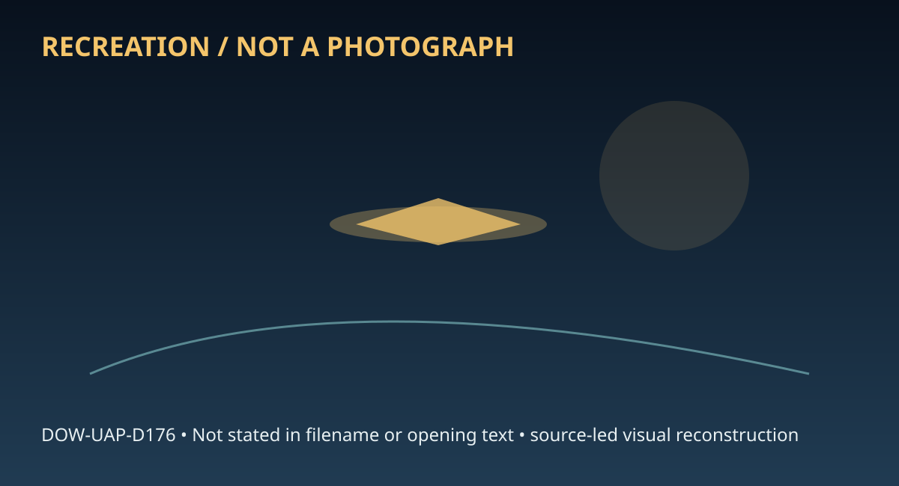

Release 07 / archival case file / DOW-UAP-D176
D176 Triangular Uap Aaro Mfr 2026
This d176 triangular uap aaro mfr places a memorandum, report, object, craft, triangle thread in a 2026 Location not resolved record.
ID: DOW-UAP-D176
Filename:
DOW-UAP-D176-Triangular_UAP_AARO_MFR_2026.pdfDate marker: 2026
Location: Location not resolved
Agency or collection signal: Department of War
Pages read: 3

RECREATION / NOT A PHOTOGRAPH. The diagram is an interpretive editorial aid, not source imagery.
What this document says
The opening page's extracted text begins: “OFFICE OF THE UNDER SECRETARY OF DEFENSE 5000 DEFENSE PENTAGON WASHINGTON, DC 20301-5000 INTELLIGENCE AND SECURITY MEMORANDUM FOR RECORD All-domain Anomaly Resolution Office | Department of War Subject: All-domain Anomaly Resolution Office (AARO) Witness Debrief: Unidentified 1843(a)(1)(C) 1843(a)(1)(C) Anomalous Phenomena (UAP) Observation, 2026. Interviewers: Primary Interviewees: - (SOURCE 1): (SOURCE 2): Additional Corroborating Witness: (SOURCE 3): 1843(a)(3) 1843(a)(3) 1843(a)(2) 1843(a)(2) 1843(a)(2) 1843(a)(2) 1843(a)(2) 1843(a)(2) 1843(a)(2) 1843(a)(2) 1843(a)(2) 1843(a)(2) OVERVIEW: This report reflects the reporter’s interpretation at the time of the event. Such characterizations should not be interpreted as a conclusive indication of the presence or absence of any intrinsic object features or performance characteristics. On approximately 1843(a)(1)(C) 2026, at 2023L, federal law enforcement agents documented an unidentified craft presenting as a matte black triangular shape of extremely low aspect ratio that was nonreflective under the observed lighting conditions. It had an estimated thirteen-to-fifteen foot wingspan, apparent six-to-nine-foot fuselage length, and a maximum vertical thickness of roughly one to two feet. The unidentified craft maintained a completely fixed horizontal alignment with did not tilt, sway, or wobble during the controlled vertical ascent”
Across the 3 pages, the recurring terms are memorandum, report, object, craft, triangle. Those details belong to this file, not to a generic case template. Page-level reading follows:
- Page 1: OFFICE OF THE UNDER SECRETARY OF DEFENSE 5000 DEFENSE PENTAGON WASHINGTON, DC 20301-5000 INTELLIGENCE AND SECURITY MEMORANDUM FOR RECORD All-domain Anomaly Resolution Office | Department of War Subject: All-domain Anomaly Resolution Office (AARO) Witness Debrief: Unidentified 1843(a)(1)(C) 1843(a)(1)(C) Anomalous Phenomena (UAP) Observation, 2026. Interviewe
- Page 2: OFFICE OF THE UNDER SECRETARY OF DEFENSE 5000 DEFENSE PENTAGON WASHINGTON, DC 20301-5000 INTELLIGENCE AND SECURITY sound despite velocities of conventional military fighter aircraft. In the infrared spectrum it displayed a spatially uniform thermal signature across the entire airframe without localized thermal concentrations, exhaust gradients, or discrete h
- Page 3: OFFICE OF THE UNDER SECRETARY OF DEFENSE 5000 DEFENSE PENTAGON WASHINGTON, DC 20301-5000 INTELLIGENCE AND SECURITY signature, or exhaust plumes. No heat shimmer, vapor trail, or particulate discharge was detected. The surface did not exhibit cloaking, optical shifting or distortion, or shimmering properties, remaining matte black throughout. There was no the
Historical context and disclosure schema
Read in context, this record belongs to the 2026 information environment: Department of War paperwork, a Location not resolved setting, and the reporting conventions visible in the source. Its broader disclosure value is procedural as well as anecdotal: it shows how an observation, material question, investigation, or analytical program was routed, described, and preserved. That makes it comparable to other Release 07 records without collapsing unlike evidence into one event.
Evidence limits
The source establishes that this document exists and records what its authors or quoted witnesses wrote. It does not, by itself, prove the identity, performance, origin, or physical reality of the reported subject. Extraction preserves wording but cannot restore missing attachments, authenticate provenance, or independently validate testimony. Interpretations beyond the page-specific record remain hypotheses.
Source: supplied PDF in research/tranche-07. This article is a research aid, not a claim that the reported object was non-human.